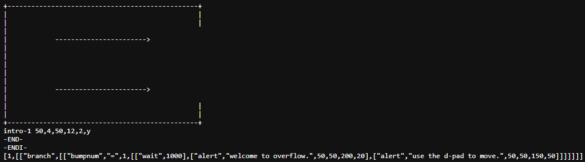

Ahh, my monthly blog post! I don't write very often, but man, it's great to type something out that's personal and not related to school!
About a month ago, I decided I was going to make an ACTUAL GAME! The current title is Overflow (referring to the technical term 'stack overflow'), but I do want to change it if I ever come up with a better name. Overflow is cool but it's often misinterpreted (as I've witnessed from talking to my friends about it...).
I'm actually almost finished with the game engine! Once I brush it up and smash all of the bugs, I can finally add the story to the game, which should be the fun part.
Because I feel like it, I'm going to explain the .map file format that I created!
Here's an example .map:
All of this together makes a big moshpit that somehow works when put into practice, albeit it is pretty slow to process (~.7 sec.). My solution? PRELOADING. If preloading didn't exist (somehow), I'd have to either rewrite the engine in C or rewrite the map format again, which would be possible but definitely not ideal.
I'm trying to have fun here, this shouldn't be a job!
I also got really excited and started to make music for Overflow! I think I created something pretty close to a movie soundtrack, which was EXACTLY what I was going for. This song is going to play during the ending cutscene!
The only problem is that I can't animate for the life of me. And my drawings suck. So, I'm going to try to improve art-wise. Hopefully by the end of 2024 (that's when I plan to release the game, by the way) I'll be good enough to make something that looks kind of okay!
To sum up / In conclusion / Finally, I'm super happy that I'm making a game! It's been a ton of fun so far, and I don't plan on stopping any time soon, unless my creativity tanks and I become too unmotivated to continue...